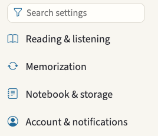
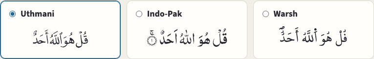
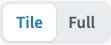
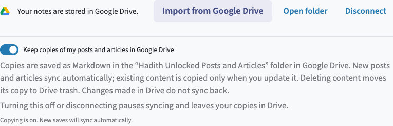

Interface type
Reading & listening
Source Sans 3 sets the interface rhythm. Page titles scale from 2 to 2.75 rem, group headings use 1.4 rem, and both use weight 650. Body text uses 1 rem with 1.5 line height. Use weight 600 for control labels.
Settings and Community email preferences establish the first patterns for navigation, preferences and feedback. Each entry records a control in use and the behavior another page can reuse.
Source Sans 3 sets the interface rhythm. Page titles scale from 2 to 2.75 rem, group headings use 1.4 rem, and both use weight 650. Body text uses 1 rem with 1.5 line height. Use weight 600 for control labels.
Ivory & ink pairs a cream canvas with near-white reading and card surfaces. Use ink for text, blue for links and switches, and Midnight indigo for primary actions. Show a two-pixel accent outline on keyboard focus. Compare light palette options.
Load the foundation stylesheet and apply ux-system to the adopting page container. Its tokens inherit the active site theme. Quran specimens retain their script-specific fonts. Prose and Markdown typography will enter the library with the first finalized reading or authoring page.

Keep one compact search field in the category rail. Name its scope in the placeholder and accessible label. Below 701 px, the rail moves above the content and category links occupy two columns.
Match nested controls and asynchronously loaded catalogs. Announce the count or empty state. Clear and Escape restore the previous disclosures and return focus to the field.

Group settings by task. Use a native details/summary row with a short label, current value or count, and a chevron. Place the summary below the label on narrow screens. Opening one row keeps the others available.

Use one labeled radio group for an exclusive script choice. Each card pairs a name with the same referenced ayah in its own script and font. Preserve Arabic direction, marks, and line height. The entire card selects the option.

Show the actual foreground and background together. Each button exposes its theme name and pressed state. Keep the selected outline visible alongside the sample.

Use a switch for inclusion, a heart for the preferred work, and a handle for ordering. Preserve protected entries and show the enabled count. Keep a single-language catalog flat. Offer “Enable all” when entries are disabled.

Tile and Full are two layouts of the same preferences. Full rows give the name and supporting detail more room. Keep the selected favorite, enabled state, and ordering when switching layouts.

Set Tile and Full in a compact inset track. Give the selected segment a raised surface and accent text. Pair it with a borderless accent action for “Enable all”. Expose the active mode with aria-pressed and retain it after reload.
These entries come from the expanded Settings panels. The shared CSS hooks live in the foundation stylesheet. Use them inside ux-system alongside the app’s Bootstrap form markup.

Use ux-panel-header for guidance or a count alongside contextual actions. At 700 px and below, stack the actions beneath the description. Reading catalogs reuse the text action and inset selector. Email preferences uses the same header with a Midnight secondary link.

Use a trailing chevron for both advanced fields and language groups. Advanced limits use native details. A catalog group uses a button with aria-expanded and aria-controls linked to its collapsible list. Keep a single-language catalog flat. See the advanced limits specimen.

Wrap the fields in ux-fields. Use ux-field-grid for related inputs and selects. Columns fit the available space and align controls below labels of different lengths. Number inputs, select menus, and unit suffixes share a 2.65 rem minimum height. Keep the unit visible next to its value.
Use the same Bootstrap switch inside ux-fields for catalog inclusion, Drive copies, and auto-recharge. The checked track uses the app’s dark accent blue. Label card switches with the item name and standalone switches with their effect. For a visible label, leave a 0.5 rem gap after the track and align wrapped lines under the first word.
Drive’s switch saves immediately. Auto-recharge groups its switch, threshold, and package under one Save action. Protected catalog entries keep their checked and disabled states. See catalog preferences.

Drive combines the existing action hierarchy with a status message. Show Connect when available. Once connected, show Import, Open folder, and Disconnect. Related actions wrap on small screens. A divider separates the optional copies preference from the connection controls.

Apply ux-inset-card to give a balance, scheduling group, or advanced disclosure the same surface and border. In billing, pair the balance with Buy, keep auto-recharge in a separate form group, and show recent point changes with amount, reason, and date. With an empty ledger, show “No point activity yet.”
Settings uses the inset selector and text action. Compare it with the two earlier alternatives using the same reciter preferences. Change the view, enable both reciters, or switch one off to try again.
Use the same field height, label weight, and focus treatment for review and billing inputs. Let the grid follow the available panel width. Show common fields first. Put category caps and queue order behind a named disclosure. Use the Midnight indigo gradient for Save and the pale indigo secondary action for Progress. A single save action applies the related fields together and reports the result near the form.

Use a labeled master switch and a fieldset for dependent categories. Turning the master off disables the categories while retaining their choices. Save applies the group. Author subscriptions save independently and report their result beside the author list. Email preferences template
Find the existing control by the task it supports. If the behavior matches, reuse the foundation tokens and link the page as another example. For a new control or meaningful variation, add an entry in its functional category with the source, rendered specimen, and interaction states that matter. Record desktop and phone behavior wherever they differ.
The current examples come from the Settings beta template, its component styles, and the local search implementation. Catalog, Drive, and billing specimens use sample account data. Use the control comparisons to find candidates as other pages are finalized.